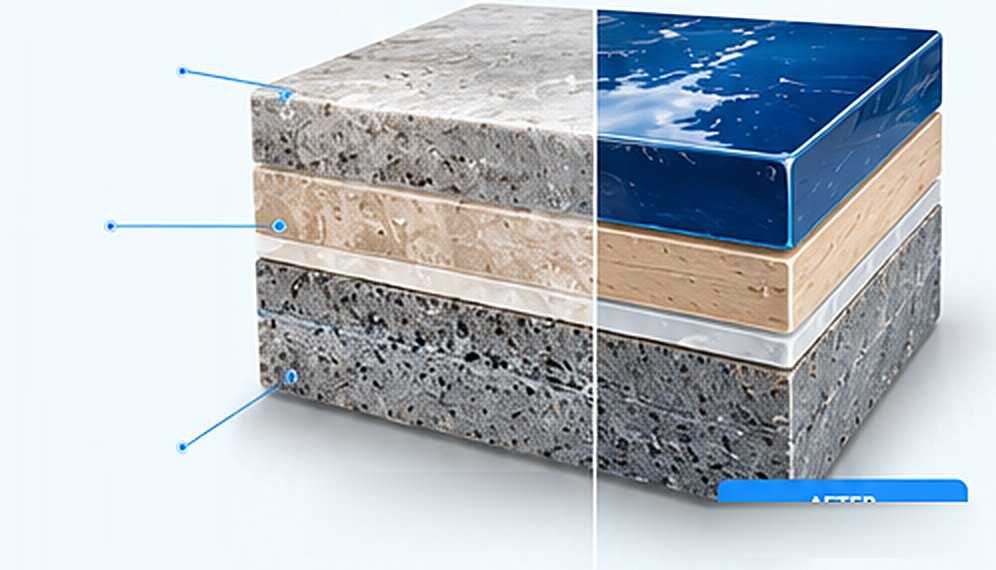
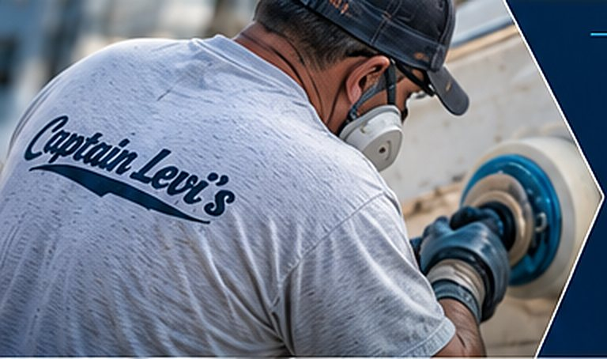

Over time, sun, UV exposure, salt, and weather break down your boat’s gelcoat, leaving it dull, chalky, and faded. Our professional color restoration process removes oxidation and brings back your boat’s original color, depth, and gloss.
Color restoration is the process of removing the oxidized, chalky layer from the surface of your boat’s gelcoat to reveal the original color underneath. With professional compounding and polishing, we safely remove the dull surface, restore depth and clarity, and bring back a high-gloss, like-new finish.

BEFOREDull, oxidized surface AFTERRestored color & clarity
We use professional-grade compounds, polishes, and techniques to safely remove oxidation and restore your boat’s original color and gloss — without removing excessive gelcoat.
Evaluate the oxidation level and determine the best approach.
Remove the oxidized surface and restore the original color.
Refine the finish to bring back depth and maximum gloss.
Apply a high-quality wax or ceramic coating to help prevent future oxidation.
See the difference professional color restoration can make. From chalky and faded to deep, glossy, and like new.
With over 50 years of fiberglass repair experience, we deliver high-quality results that keep your boat looking its best. From small oxidation spots to full hull restorations, we’re the team boaters across Tampa Bay trust.
That depends on how the boat is kept. A restored finish that’s protected with wax or a ceramic coating, rinsed after use and kept covered holds its gloss far longer than one left out in the Florida sun. We’ll recommend a maintenance plan that fits how you use your boat.
Most surface oxidation compounds out completely. If the gelcoat is worn very thin or chalked through in spots, there may not be enough color left to bring back — we’ll tell you before we start, and those areas may need gelcoat repair instead.
Restoration brings back the color that’s already in your gelcoat, so there’s nothing to match on most boats. Where an area needs repair or new gelcoat, we tint it to the restored finish so it blends in.
Yes — protection is the last step of every restoration. Wax is affordable and easy to reapply; a ceramic coating costs more up front but lasts longer and makes the hull easier to clean. We’ll help you choose.
It depends on the size of the boat, how heavy the oxidation is and how many compounding and polishing stages it needs. Send us a few photos or have us take a look, and we’ll give you a free, no-obligation quote.
Get a free quote or talk directly with Captain Dave about your boat.
Have a faded or chalky finish you want brought back, need a quote, or ready to schedule? Fill out the form or give us a call — we’ll get back to you as soon as possible. Your boat deserves the best, and we’re here to make it happen.
Tell us a little about your project and we’ll get back to you quickly.